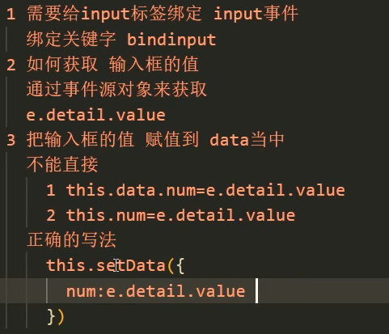
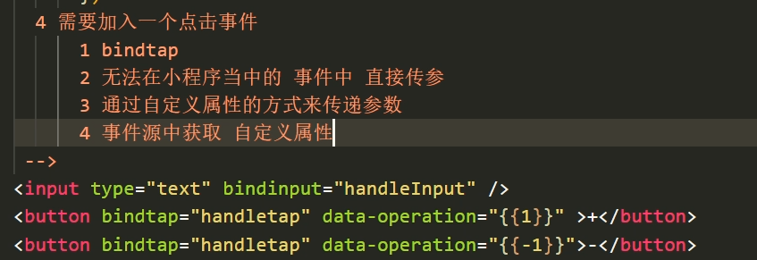

微信小程序
| 结构 | 传统web | 微信小程序 |
|---|---|---|
| 结构 | HTML | WXML |
| 样式 | CSS | WXSS |
| 逻辑 | Javascript | Javascript |
| 配置 | 无 | json |
基本目录
1 | pages // 入口文件 |
一个程序页面由四个文件组成
| 文件类型 | 必需 | 作用 |
|---|---|---|
| js | 是 | 页面逻辑 |
| wxml | 是 | 页面结构 |
| json | 否 | 页面配置 |
| wxss | 否 | 页面样式表 |
WXML
WXML（WeiXin Markup Language）是框架设计的一套标签语言，结合基础组件、事件系统，可以构建出页面的结构。
数据绑定
1
<view> {{message}} </view>
列表渲染
1
<view wx:for="{{array}}"> {{item}} </view>
条件渲染
1
2
3<view wx:if="{{view == 'WEBVIEW'}}"> WEBVIEW </view>
<view wx:elif="{{view == 'APP'}}"> APP </view>
<view wx:else="{{view == 'MINA'}}"> MINA </view>模板
WXML提供模板（template），可以在模板中定义代码片段，然后在不同的地方调用。
定义模板，使用 name 属性，作为模板的名字。然后在
<template/>内定义代码片段。1
2
3
4
5
6<template name="msgItem">
<view>
<text> {{index}}: {{msg}} </text>
<text> Time: {{time}} </text>
</view>
</template>使用模板，模板拥有自己的作用域，只能使用 data 传入的数据以及模板定义文件中定义的
<wxs />模块。1
2
3
4
5<template is="msgItem" data="{{...item}}"/>
<-->动态选择模板</-->
<block wx:for="{{[1, 2, 3, 4, 5]}}">
<template is="{{item % 2 == 0 ? 'even' : 'odd'}}"/>
</block>
引用
绑定事件
bind事件
cmd触发的事件
获取事件源


自定义组件
将公共部分抽取出来，定义成一个组件。
定义组件
- properties存放接收的数据
- data存放组件的初始数据
- methods存放方法
声明组件
父向子传数据
子向父传数据